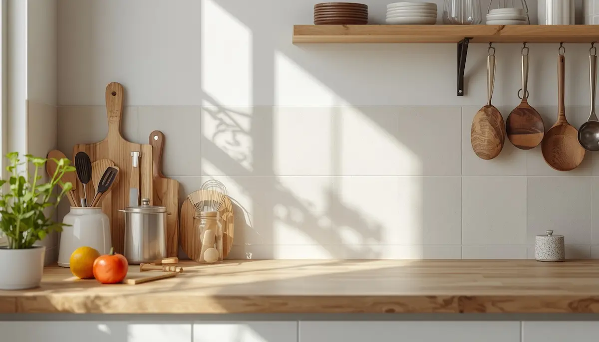

Adaptar la cocina y evitar la contaminación cruzada
Una vez diagnosticada la celiaquía, el hogar se convierte en el epicentro de la seguridad alimentaria. No se trata de transformar la cocina en un espacio clínico inaccesible, sino de aplicar pautas prácticas y organizativas que eviten de forma absoluta la contaminación cruzada. Cuidar estos detalles cotidianos protege la salud digestiva del menor y aporta tranquilidad a toda la familia.
Comprender el riesgo invisible de la contaminación cruzada
La contaminación cruzada ocurre cuando una traza de gluten —incluso microscópica— pasa de un alimento o superficie con gluten a otra que está libre de él. Unas migas en la tostadora compartida, una cuchara de madera porosa que ha removido pasta convencional o el uso de la misma mantequilla pueden desencadenar la reacción autoinmune. Por ello, ordenar la despensa y establecer zonas claras de trabajo es una prioridad fundamental.
"La seguridad en el hogar no depende de complicadas restricciones, sino de un orden inteligente donde cada utensilio y alimento sin gluten ocupa un espacio protegido."
Estrategias prácticas para el día a día en la cocina
Organizar los espacios domésticos mediante sencillos ajustes previene accidentes y simplifica la labor culinaria:
1. Jerarquizar la despensa y baldas: Situar siempre los productos libres de gluten en las baldas superiores para evitar que caigan restos o polvillo de alimentos con gluten almacenados encima.
2. Sustituir utensilios porosos: Reemplazar tablas de cortar de madera y espátulas rayadas por materiales de fácil lavado como acero inoxidable, cristal o silicona que no retengan trazas.
Un hogar seguro y compartido con naturalidad
Adaptar la cocina familiar no significa aislar al menor ni duplicar platos de forma caótica; muchas familias optan por adaptar toda la cocina al modelo sin gluten para ganar absoluta tranquilidad. Con rutinas de limpieza claras y una despensa organizada, el hogar recupera el placer de cocinar juntos sin miedo ni fricciones.
➔ Volver al índice de Celiaquía e intolerancias